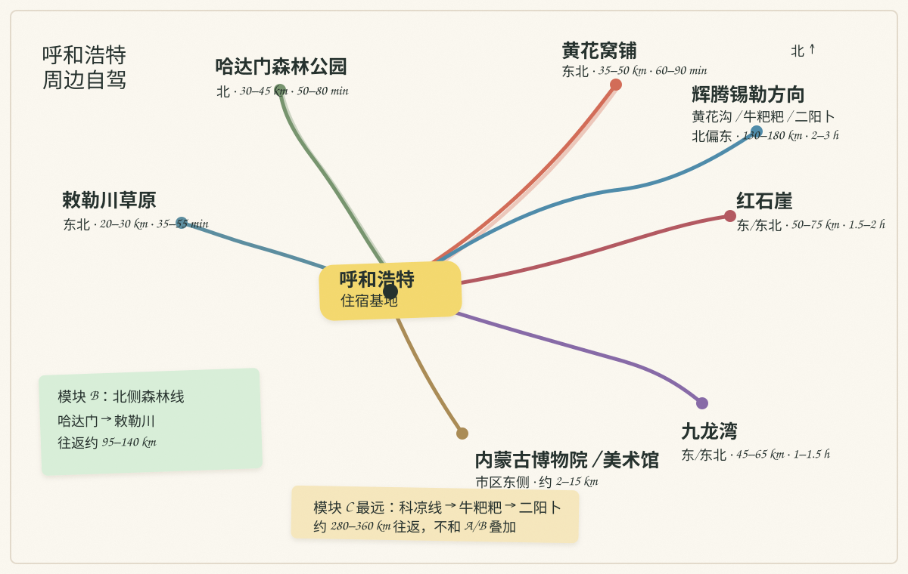

第 01 天抵达
北京 → 呼和浩特
大召寺、塞上老街和晚餐
上午 高铁抵达，酒店寄存行李。
下午 老城建筑短停，晚餐安排地方风味。
市区步行与短途打车详细安排 ↗
呼和浩特周边 · 六天五晚
以呼和浩特为住宿基地，常规游览日 10:00 左右出发，组合近郊山地、草原公路和室内场馆。
路线
呼和浩特一地连住，四个模块按山地、森林、草原与室内场馆分配。
位置
以呼和浩特市区酒店为中心，不同模块分属不同方向；距离按公路估算，不是直线距离。

行程
四个模块完整游览安排六天五晚；五天四晚版本保留 A、B、D 三个模块。
每日
大召寺、塞上老街和晚餐
上午 高铁抵达，酒店寄存行李。
下午 老城建筑短停，晚餐安排地方风味。
草甸、牧场与红色岩壁
10:00 呼和浩特酒店出发。
13:30–16:15 红石崖主要游览。
森林、高山草甸与平地草原
10:00 呼和浩特酒店出发。
11:15–14:30 哈达门景区游览。
远郊草原公路一日线
10:00 出城前往辉腾锡勒方向。
16:00 开始返呼，完整车程约 4.5–6.5 小时。
草原历史与当期艺术展览
10:00 前往内蒙古博物院新馆。
14:40 前往内蒙古美术馆。
还车后乘高铁返京
上午 早餐、退房、办理还车。
返程 呼和浩特东站乘高铁。
第 01 天 · 抵达
城市老城短停 + 呼和浩特地方风味
呼和浩特全程连住，酒店选择有停车位、靠近主干道的新华东街沿线或市区东北方向；老城晚餐可短途打车。
第 02 天 · 模块 A
草甸、牧场与红色岩壁，路线参考 小红书《呼市近郊环线自驾游记》↗
| 路段 | 距离 | 车程 |
|---|---|---|
| 酒店 → 黄花窝铺 | 35–50 km | 60–90 min |
| 黄花窝铺 → 红石崖 | 15–25 km | 30–50 min |
| 红石崖内部 | 10–25 km | 30–60 min |
| 红石崖 → 酒店 | 55–75 km | 80–110 min |
红石崖与九龙湾相距约 20 多公里。九龙湾完整游览日采用“酒店 → 九龙湾（约 45–65 km）→ 敕勒川（约 35–55 km）→ 酒店”路线，约 100–150 km，集中体验森林、沟谷和水景；红石崖安排在 A 日。
黄花窝铺观光车和红石崖门票价格以当日售票页面为准，公开游记中的 38 元、53/60 元作为预算参考。
第 03 天 · 模块 B
森林、高山草甸与平地草原
| 路段 | 距离 | 车程 |
|---|---|---|
| 酒店 → 哈达门入口 | 30–45 km | 50–80 min |
| 哈达门 → 敕勒川停车场 | 45–65 km | 75–105 min |
| 敕勒川 → 酒店 | 20–30 km | 35–55 min |
哈达门门票+往返观光车按公开游记约 70 元/人预算，景区运营路线、营业时间、景交末班和呼武旧路交通组织以当期公告为准。敕勒川安排 45–60 分钟，秋季森林景色以当年天气和叶色为准。
第 04 天 · 模块 C
远郊草原公路一日线，路线参考 小红书《呼市近郊环线自驾游记》↗
| 路段 | 距离 | 车程 |
|---|---|---|
| 酒店 → 牛粑粑所选分区 | 130–160 km | 2–2.75 h |
| 牛粑粑 → 黄花沟南门外围 | 5–15 km | 10–25 min |
| 黄花沟外围 → 二阳卜村 | 5–15 km | 15–30 min |
| 二阳卜 → 酒店 | 140–170 km | 2.25–3 h |
黄花沟购票入园时改为黄花沟单景区日。牛粑粑东、西区位置和停车方式按当天地图确认；二阳卜土坡路以确认开放为准。外围方案按现场停车、骑马、草原运营区及其他活动费用预算。
第 05 天 · 模块 D
室内参观约 6–7 小时含交通与午餐
| 场馆 | 重点 | 地址 |
|---|---|---|
| 内蒙古博物院新馆 | 草原历史、考古、民族文化、古生物 | 新华东街 76 号 |
| 内蒙古美术馆 | 当期绘画、雕塑与主题展览 | 新华东街 20 号 |
博物院按官网、公众号或“云游内博”提前 7 天预约，常规开放 09:00–17:00、16:00 停止入馆，周一闭馆安排以公告为准。美术馆常规开放周二至周日 09:00–17:00、16:30 停止入场，展览免费，身份证核验入馆。偏好恐龙、矿石和化石时，可将美术馆替换为内蒙古自然博物馆（南二环路 13 号），馆间约 12–18 km、30–45 分钟。
第 06 天 · 返程
呼和浩特东站乘高铁返京
租车合同支持异地还车时，可在乌兰察布结束后直接乘车返京；市区还车时，车辆、进站与高铁时间按当天车次预留余量。
出发前备忘
确认停车、保险、非铺装路限制和还车时间；山路减速，正规位置停车。
确认红石崖、九龙湾、哈达门的国庆票种、开放道路、景交末班和预约。
先预约内蒙古博物院；美术馆查看当期展览和闭馆日。
防风外套、防滑鞋、饮水、简餐、墨镜和充电宝。十月山上比市区冷。